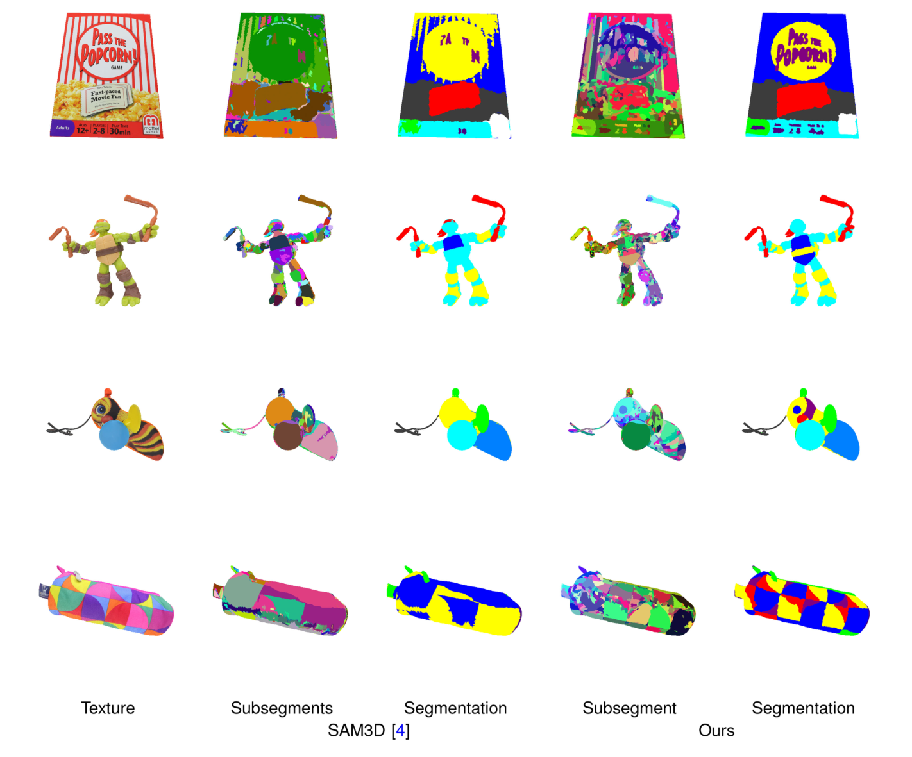
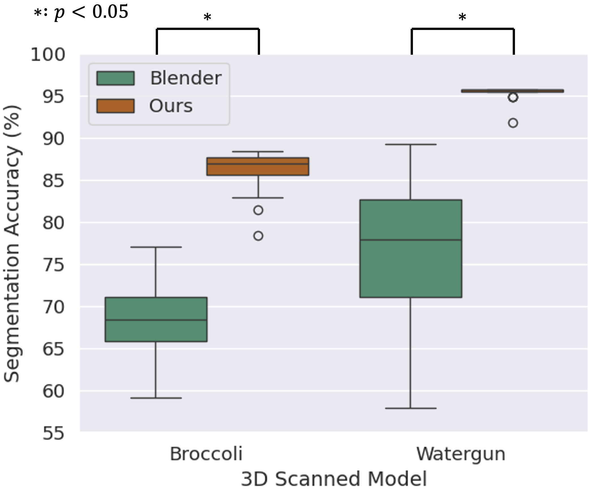
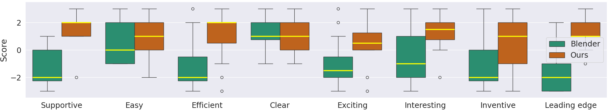
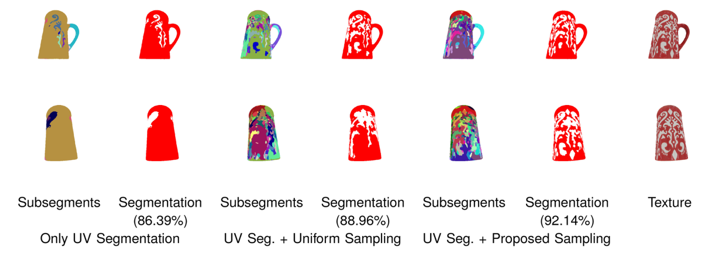
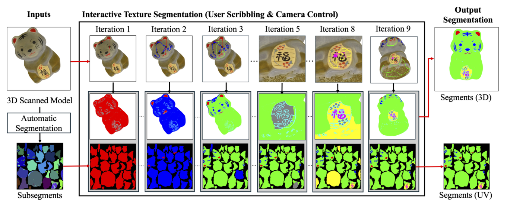
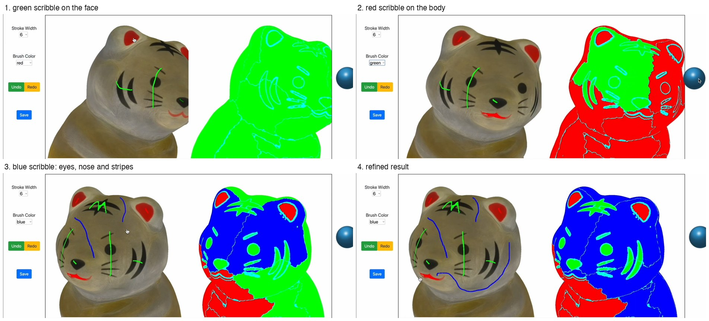

Interactive Texture Segmentation of 3D Scanned Models Leveraging Multiview Automatic Segmentation
IEEE Computer Graphics and Applications, 2025 (also presented at CHI 2025 Late-Breaking Work) · doi:10.1109/MCG.2025.3595378
Abstract
In 3D model scanning, the raw texture of a 3D model often requires segmentation into distinct regions to apply different material properties to each region. Current methods, such as manual segmentation, are labor-intensive, while automatic segmentation techniques lack user control. We propose an interactive tool that combines automatic segmentation with minimal manual intervention, striking an optimal balance between efficiency and control. Following a multiview automatic segmentation process that divides the texture into small subsegments, users cluster the subsegments into segments by drawing simple scribbles in the 3D model view. We show that our approach results in more detailed subsegments compared to automatic segmentation approaches. Furthermore, a user study confirms that our approach improves segmentation accuracy and quality compared to manual segmentation with standard 3D computer graphics software. This research paves the way to more efficient texture segmentation in 3D model scanning.
Results




How it works


Citation
@ARTICLE{11108266,
author={Madono, Koki and Igarashi, Takeo and Kato, Hiroharu and Hashimoto, Taisuke and Matulic, Fabrice and Takagi, Tsukasa and Higuchi, Keita},
journal={ IEEE Computer Graphics and Applications },
title={{ Interactive Texture Segmentation of 3D Scanned Models Leveraging Multiview Automatic Segmentation }},
year={2025},
volume={},
number={01},
ISSN={1558-1756},
pages={1-14},
keywords={Three-dimensional displays;Image segmentation;Solid modeling;Manuals;Image color analysis;Computational modeling;Brushes;Cameras;Accuracy;Training},
doi={10.1109/MCG.2025.3595378},
url = {https://doi.ieeecomputersociety.org/10.1109/MCG.2025.3595378},
publisher={IEEE Computer Society},
address={Los Alamitos, CA, USA},
month=aug}
← Back to the publication list